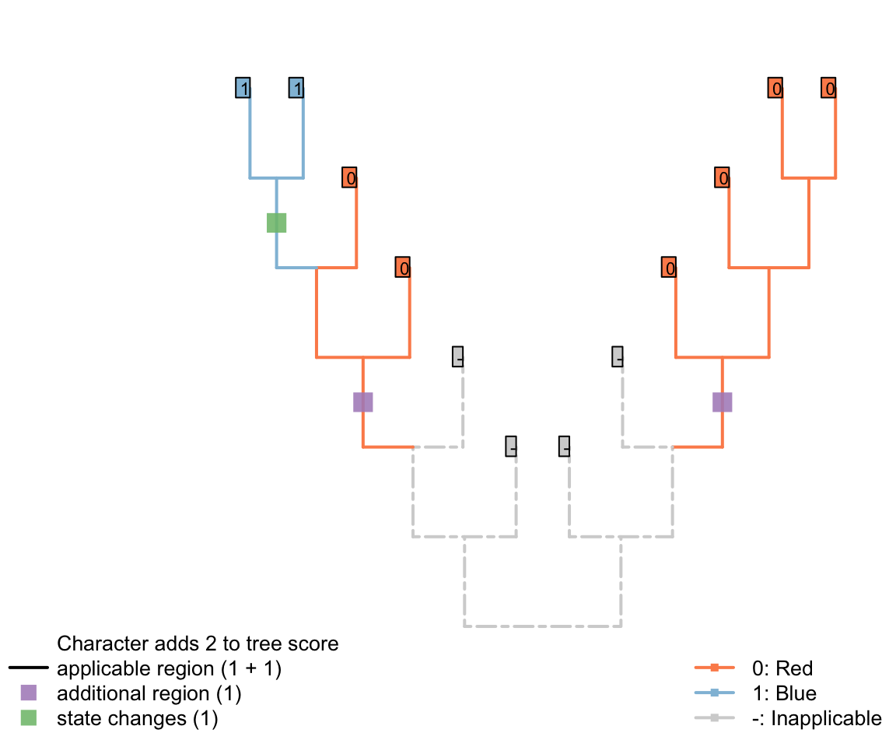

3 A solution
3.1 Minimising homoplasy
A solution can be found if the goal of parsimony is recast not in terms of minimising the number of steps, but instead of minimising the amount of homoplasy in a tree.
De Laet has made this point before (De Laet, 2005, 2015), suggesting that a tree’s score should be calculated as
Total score = Number of steps + Number of (additional) regions.
Practically, because the number of unavoidable regions is a function of a dataset and not of a tree, one could alternatively count
Total score = Number of steps + Number of regions
which would be a constant number larger than the total score generated just counting additional regions; the absolute value of the score is not meaningful in itself and is not comparable between datasets, so the calculation method does not affect tree search.
The tree below gives an example of a tree in which a character in applicable in two regions (one more than the minimum possible, one) and one state change.

This score denotes two evolutionary observations that cannot be attributed to inheritance from a common ancestor: the blueness of tail in the blue tailed taxa (as the common ancestor inherited a red tail), and the redness of tail in the second region of the tree (as the common ancestor of all tail-bearing taxa did not itself have a tail, so tail colour could no be inherited).
3.1.1 What does it take to denote separate regions?
It takes three inapplicable nodes (including tips) to force two regions of the tree to be separrated by an inapplicable region.
This can be estabilshed by imagining the Fitch optimisation of a separate character
Applicability of the character of interest: (0), inapplicable; (1), applicable
In the case of tail colour, this applicability character has the same distribution as the presence / absence of the tail, but this is not necessarily the case (there may be a range of reasons to code a character as inapplicable).
In the tree shown above, the Fitch algorithm identifies two regions where the applicability character is unambiguously ‘applicable’:
If one of the inapplicable tips had instead been ambiguous, then the same distribution would arise:
But if two were ambiguous, then the root of the tree could be parsimoniously reconstructed as ‘applicable’ – with the two inapplicable tips becoming inapplicable in the branches that led to them:
This reconstruction maximises the inferred homology between tails, and so increases the opportunity to attribute shared colours in the tail to common ancestry. As such, our algorithm chooses to interpret this region as applicable whereever it parsimoniously can.
Note that the three inapplicable tips necessary to define an inapplicable region must be in a contiguous region of the tree, separated from one another only by taxa whose applicability is ambiguous, in order for two applicable regions to be reconstructed as separate.
3.1.2 How this fixes the problem
This overcomes the problem where steps could be avoided by inferring multiple innovations of a character:

Figure 3.1: Reconstructions of tail presence and five contingent characters (only two shown)

Figure 3.1: Reconstructions of tail presence and five contingent characters (only two shown)

Figure 3.1: Reconstructions of tail presence and five contingent characters (only two shown)
On the other hand, if taxa either have a blue, scaly, straight tail or a red, smooth, curly tail, then the fact that the tails have so little in common means that it wouldn’t be entirely surprising if the two different tail types evolved twice. This scenario thus incurs a cost of only one step (for the additional origin of the tail) more than if the tail evolved once, and change all its attributes:
Figure 3.2: Reconstructions of tail presence and five contingent characters (only two shown)
3.1.3 Summary
This is the desired behaviour. But how do we count this in practice?
In brief, we evaluate for each tip whether the character in question is applicable, inapplicable, or ambiguous (could be either), and use the standard Fitch algorithm on this applicability data to reconstruct the state of each internal node, reconstructing ambiguous nodes on the uppass as applicable.
This done, we conduct a second Fitch-like pass on the tree, in which we count transformations if they occur at nodes in which the character has been reconstructed as applicable. Additional regions are also counted on this downpass, by counting nodes that are ancestral to an inapplicable region of the tree that itself leads to an as-yet-uncounted applicable region.
3.2 Algorithmic implementation
Consider a tree with 12 taxa and the following multi-state characters with inapplicable data 23--1??--032; say the character is “colour of the tail” ranging from 0 to 3 (four colours). Four taxa in our example have no tail (hence the inapplicable data -) and for two taxa, the data is missing (?- we don’t known the colour of the tail or even whether the taxa have a tail or not).

We can use the Inapp package to apply our four-pass inapplicable algorithm to this character on this tree.
## Loading the Inapp package
library(Inapp)
## The tree
tree <- read.tree(text = "((((((1,2),3),4),5),6),(7,(8,(9,(10,(11,12))))));")
## The character
character <- "23--1??--032"
## Applying the NA algorithm
matrix <- apply.reconstruction(tree, character, method = "NA")Here is what is happening:
3.2.1 Passes 1 & 2
The first two passes are a standard Fitch algorithm applied the the parent character of the studied character (see Fitch algorithm) with a special rule for the inapplicable state (-).
For the first pass (first downpass):
- If state in common between the two descendants is the inapplicable state, but that both have also applicable states, set the node’s state to be the union between the descendants states (rather than their state in common).
- If there is no state in common between the descendants and both descendants have applicable states, remove the inapplicable state from their union (rather than simply setting the nodal state to their union).
For the second pass (first uppass):
- If the focal node has both applicable and inapplicable states, set it to be the inapplicable state only if its ancestor has also only the inapplicable state, else remove the inapplicable state.
- If the focal node has only an inapplicable state and it’s ancestor has not only the inapplicable state, set it to be the union between it’s descendants states if their are both applicable, else, leave it as the inapplicable state.
## Plotting the NA two first passes
plot(matrix, passes = c(1,2), counts = 0,
legend.pos = 'none', show.labels = c(1, 2))
Figure 3.3: Inapplicable reconstruction after two passes
The parent character can be considered as a binary character “presence (1) or absence (0) of a tail” that would be 11001??00111. The character would be reconstructed as:
## The parent character
parent_character <- "11001??00111"
## Applying the Fitch algorithm
matrix_parent <- apply.reconstruction(tree, parent_character, method = "Fitch")
plot(matrix_parent, passes = 1:2, legend.pos='none', show.labels = c(1, 2))
Figure 3.4: Fitch reconstruction of the parent character
As you can see, both reconstructions are identical: nodes with no tail are denoted as 0 in the case of the “parent character” and as - for our current character. Note however that contrary to the Fitch algorithm, there is no tree score counting in our algorithm for the two first passes. Indeed, in the case of the Fitch reconstruction of the “parent character”, the gain or losses of a tail are counted but not the changes in states for the subtending character (the tree score is 3 in Fitch, 5 in our case).
3.2.2 Pass 3
The third pass further resolves ambiguities at nodal states. If the node is applicable, the standard Fitch downpass comparisons between the descendants are applied (see Fitch algorithm) but with the rules relative to the inapplicable state described for the first downpass above.
During this pass, we can also count the tree score. This score is composed of both:
- the change in states (e.g. the change in the colour of the tail)
- the change between applicable and inapplicable regions (e.g. the change in the parent character: a gain or a loss of the tail)
The changes of states are calculated the same way as Fitch for the applicable states only:
- If there is no state in common between both node’s descendants and that the node, and its descendants have a least one applicable state, increment the tree score.
plot(matrix, passes = c(1,2,3), counts = 2, show.labels = c(1, 2))
Figure 3.5: State changes
For example, for node n23, there is no state in common between the tip 12 (2) and 11 (3), the tree score is incremented at this node (case 1 above). Note, however, that for node n21, there is no state in common between node n22 (023) and tip 9 (-) but the score is not incremented since it does not concern applicable states only. In other words, there is no change in state at the node n21 from the tail having a colour 0, 2 or 3 to the tail not being present (-) but rather a change in the parent character between presence and absence of the tail (present is 023 and absent is -).
3.2.2.1 Tracking applicable regions
To know whether any node leads to a region of applicable states we can use a “tracker” for each node that tells us at any moment whether descendants of a node contain applicable data or not. When a node is inapplicable and has a descendant whose lineage leads to applicable regions, an extra applicable region is implied by the tree. In other words, following our “colour of the tail” character, extra applicable regions imply independent appearances of the tail somewhere in the node’s descendants.
The tracker is initialised during the second pass (first uppass) and is updated during the third pass (second downpass). The tracker works as follows for each node’s left and right descendants:
- If the descendant state is applicable or leads to an applicable region, then the node leads to an applicable region; else, it does not.
The trackers are initialised for each node during the first uppass and then propagated back down the tree during the second downpass.
Using these trackers, we can then increment the tree score for all changes that imply a new applicable region. The switch to or from an inapplicable and applicable region are counted as follows:
- If the node is inapplicable and both descendants lead to regions of applicable states, increment the region count.
- If the node is applicable, but has an inapplicable descendant that leads to a region of applicable states, increment the region count.
plot(matrix, passes = c(1,2,3), counts = 1, show.labels = c(1, 2))Figure 3.6: Counting applicable regions
For example, node n15 is solved as inapplicable but both his descendants lead to two independent applicable regions (tip 5 with the state 1 and node n18 with the states 1 and 2). This implies an independent change in the parent character (in our example, tail is absent at node n15 but evolves independently at tip 5 and node n18). Conversely, node n21 is solved as inapplicable but not both his descendants lead to independent applicable regions. This node does thus not imply an independent change in the parent character.
Note that the number of applicable regions for a character is always at least 1 (unless every taxa has the inapplicable state) and therefore, we only count the additional regions.
Combining both scores – the number of changes in character states and the number of additional applicable regions – we get indeed a total tree score of 5 for this character on this tree.
## Plotting the NA two first passes
plot(matrix, passes = c(1,2,3), counts = c(1,2), show.labels = c(1,2))
Using the first three passes is enough to get the tree score (while taking into account inapplicable data!) but does not solve all ancestral reconstructions. A fourth pass (second uppass) might be necessary to finalise the node states reconstructions.
3.2.3 Pass 4
In the example above, the node n23 is still not correctly solved after the third pass. It could conceivably be state 0 (with transformations to states 2 and 3 occurring on the branches leading to tips 11 and 12 respectively). As such, its final state reconstruction should be 023. To reach the correct final reconstructions, we apply a final pass of the algorithm. This algorithm, similarly to the second pass of the Fitch algorithm is used to solve ambiguities in the ancestral nodes reconstructions (although the score of the tree is already known). It follows these rules and only applies to nodes and ancestors that have at least one applicable token for themselves and their ancestor(nodes that are inapplicable are already solved):
- If there is a state in common between the node and its ancestor or between the ancestor and the states in common of its descendants, resolve the node to be this state in common.
- If there is nothing in common between the node and its ancestor or between its descendants, solve the node as either:
- being the ancestors state if the any of the descendants’ have at least one inapplicable state but no state in common with the ancestor.
- being the union of the ancestor’s and the descendants’ states if the any of the descendants have at least one inapplicable and have at least one state in common with the ancestor.
- being the union of the ancestor’s and the current node states the descendants have no inapplicable state.
plot(matrix, passes = c(1,2,3,4), counts = c(1,2), show.labels = c(1,2))#, col.states=TRUE)
3.3 Software implementation
This algorithm has been implemented in two R packages. Inapp provides an interactive visualization of how the score of a user-specified tree is calculated for any character under different approaches to inapplicable data. This package was used to generate many of the figures in this document.
TreeSearch allows for parsimony tree searches with the inapplicable algorithm (Brazeau et al., 2017).
It includes heuristic search options that make it possible to search reasonable-sized matrices, and includes an option for equal or implied weighting.
TreeSearch is a front-end to the morphylib C library, which will eventually implemented in the standalone Morphy program for rapid phylogenetic searches.
References
De Laet, J. (2005). Parsimony and the problem of inapplicables in sequence data. In V. Albert (Ed.), Parsimony, phylogeny and genomics (pp. 81–116). Oxford University Press.
De Laet, J. (2015). Parsimony analysis of unaligned sequence data: maximization of homology and minimization of homoplasy, not minimization of operationally defined total cost or minimization of equally weighted transformations. Cladistics, 31, 550–567. doi:10.1111/cla.12098
Brazeau, M. D., Guillerme, T., & Smith, M. R. (2017). Morphological phylogenetic analysis with inapplicable data. bioR\(\chi\)iv. doi:10.1101/209775